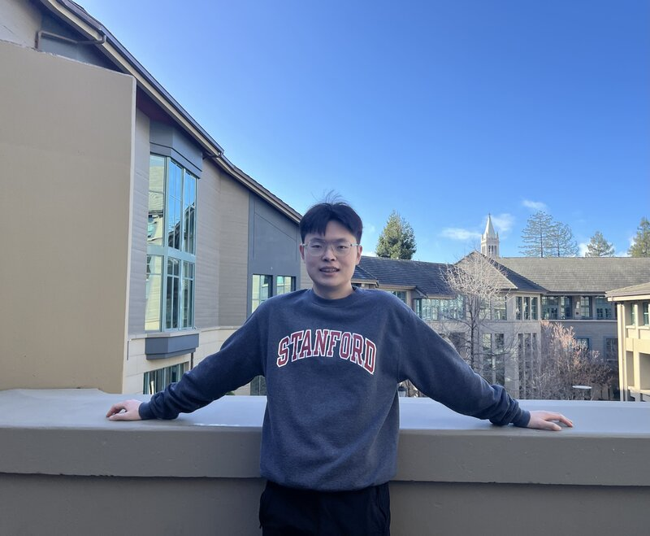

Monte Carlo & Molecular Dynamics
I am a third year Ph.D. candidate in Micronano Mechanics Group at Stanford University. I am privileged to be advised by Prof. Wei Cai.
My primary research interest lies in rare events, particularly in developing theories and algorithms to (1) accelerate rare events and (2) estimate their transition rates.
I am also interested in prediction of mechanical behaviors of massive polymer networks through molecular dynamics (MD) simulations and statistical analysis.
Recently, I have been working on accelerated kinetic monte carlo simulation in discretized phase space; utilizing branching random walk algorithm and neural network bias potentials.